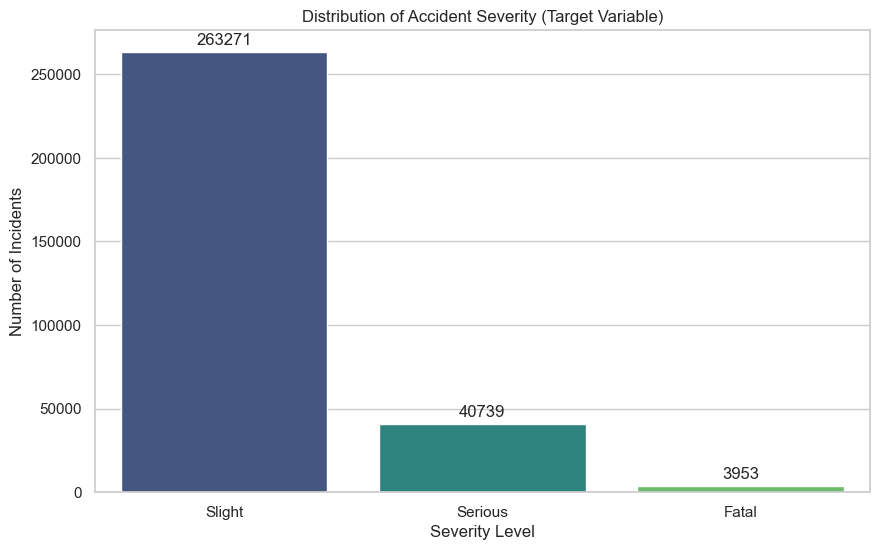

project
Road Accident Severity Prediction
Predicting accident severity while handling severe class imbalance
overview
An end-to-end data science project predicting road accident severity using Random Forest and SMOTE. The project focuses on handling class imbalance while building a machine learning pipeline for accident-severity prediction.

problem
Road accident data is typically dominated by low-severity incidents, making severe cases hard for a model to learn — the project centers on this class imbalance problem.
approach
Uses SMOTE to balance the training data and a Random Forest classifier to predict severity, building a full pipeline from raw data to prediction.
data
The target variable — accident severity — is heavily imbalanced: 263,271 "Slight" incidents against 40,739 "Serious" and just 3,953 "Fatal" cases, which is why SMOTE resampling was necessary before training.
technical work
Built in Python with Pandas for data handling and Scikit-learn for the Random Forest model and SMOTE resampling.
results / insights
business value
technologies
links